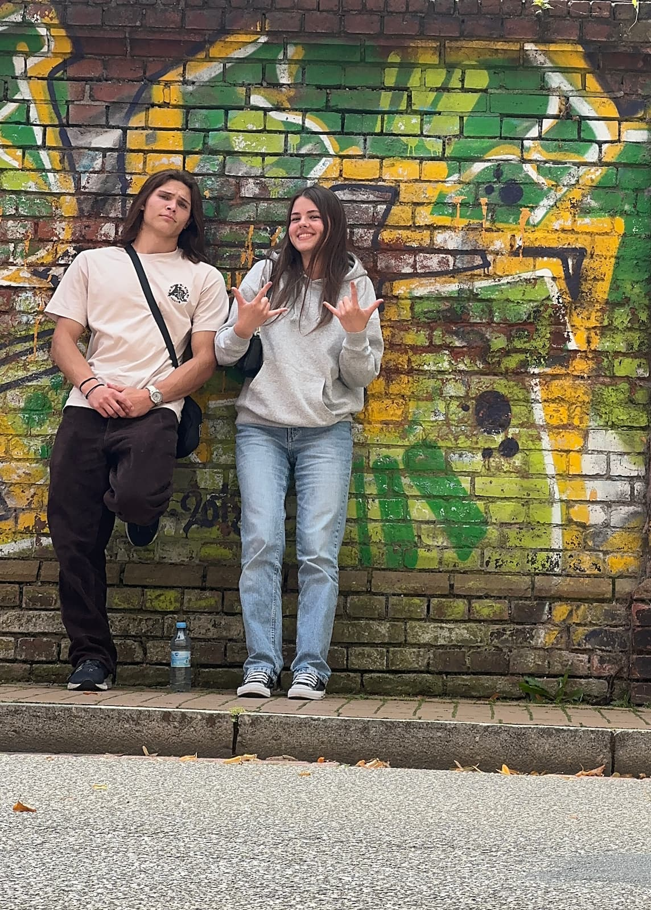
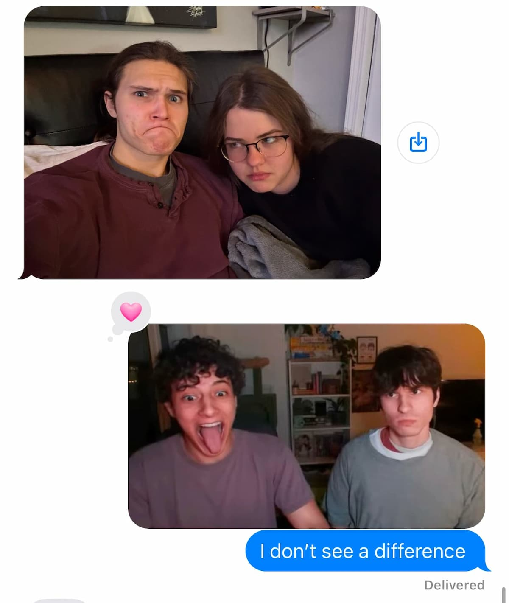
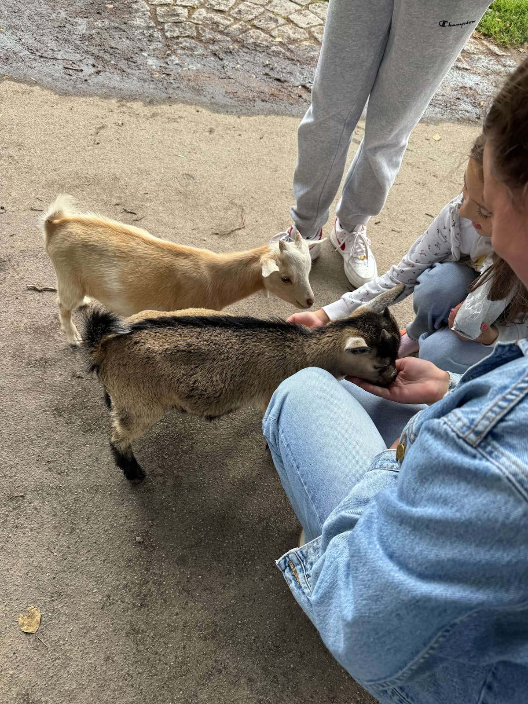
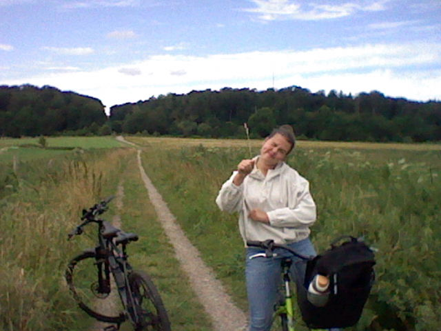

FRAME.JPG
The most iconic one in my mind. The beating sun, a gentle breeze, UGH! Fantastic.

POSTED_UP.JPG
Two moggers posted up. Walking around that empty part of town felt so surreal at the time.

DUO.JPG
Nothing could compare to having a fun day out then settling at night with a Martin & Hamzah on the TV. (I still have this one favorited you know!)

A_DAY_AT_THE_ZOO.JPG
Little Asriel & Ralsei! I was so grateful to your parents for being able to bring us to do fun things like this.

FIELD_&_GIRL.JPG
A long road to nowhere and a girl with dimples. I've said it before but getting lost with you was some of the most fun i've ever had. I'll remember that day for maybe my whole life.